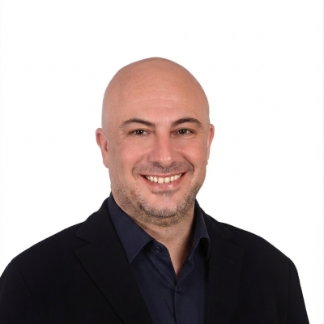
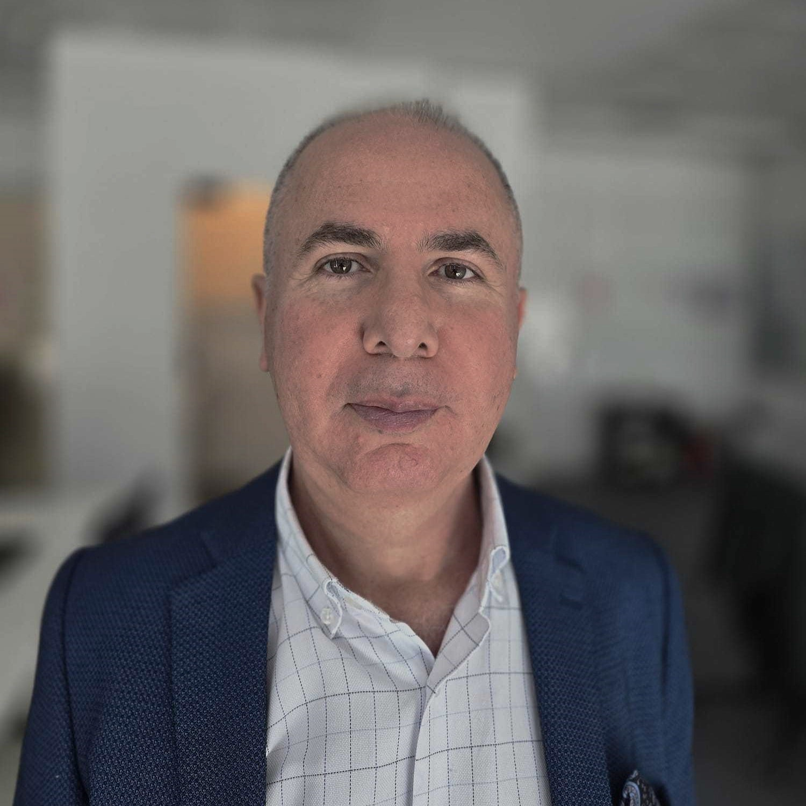
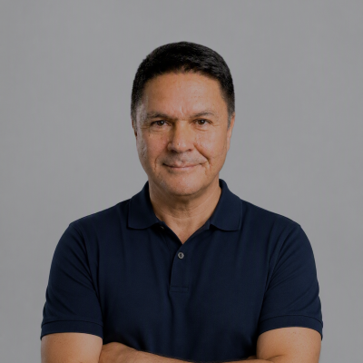
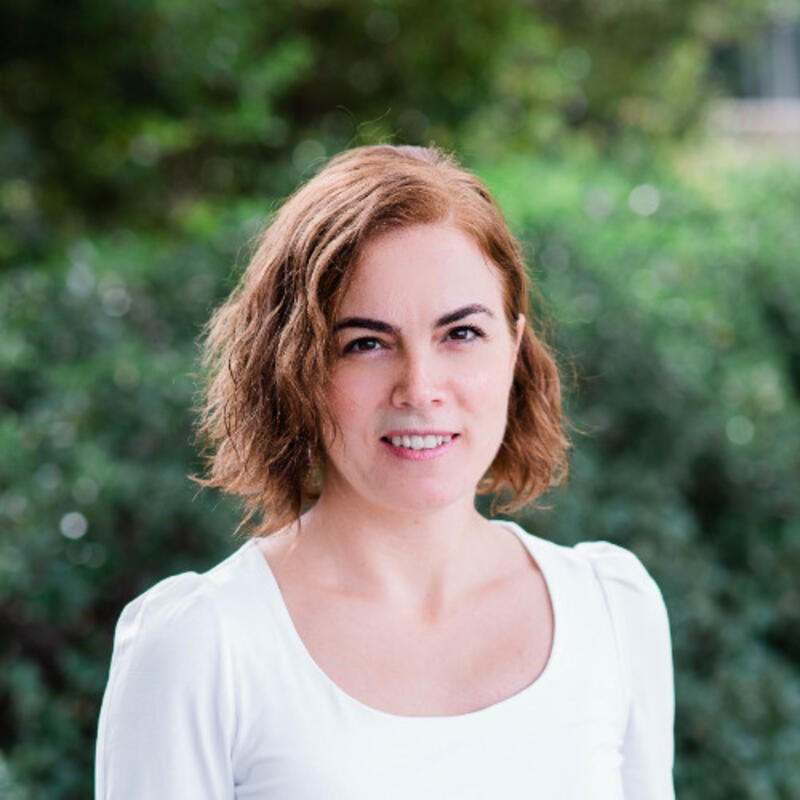
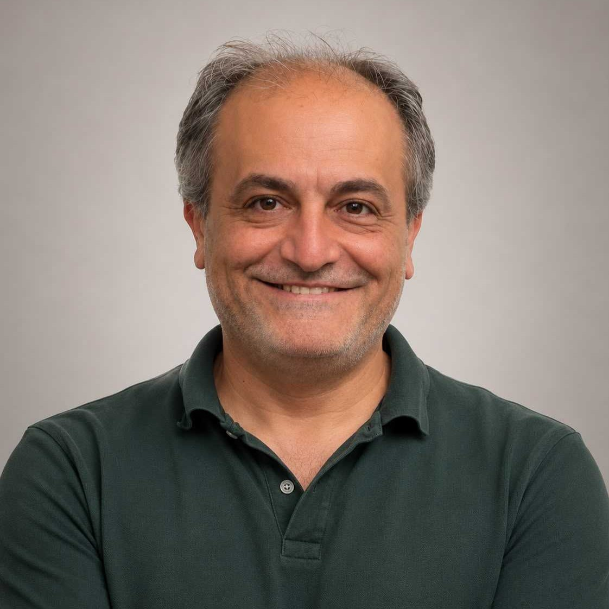
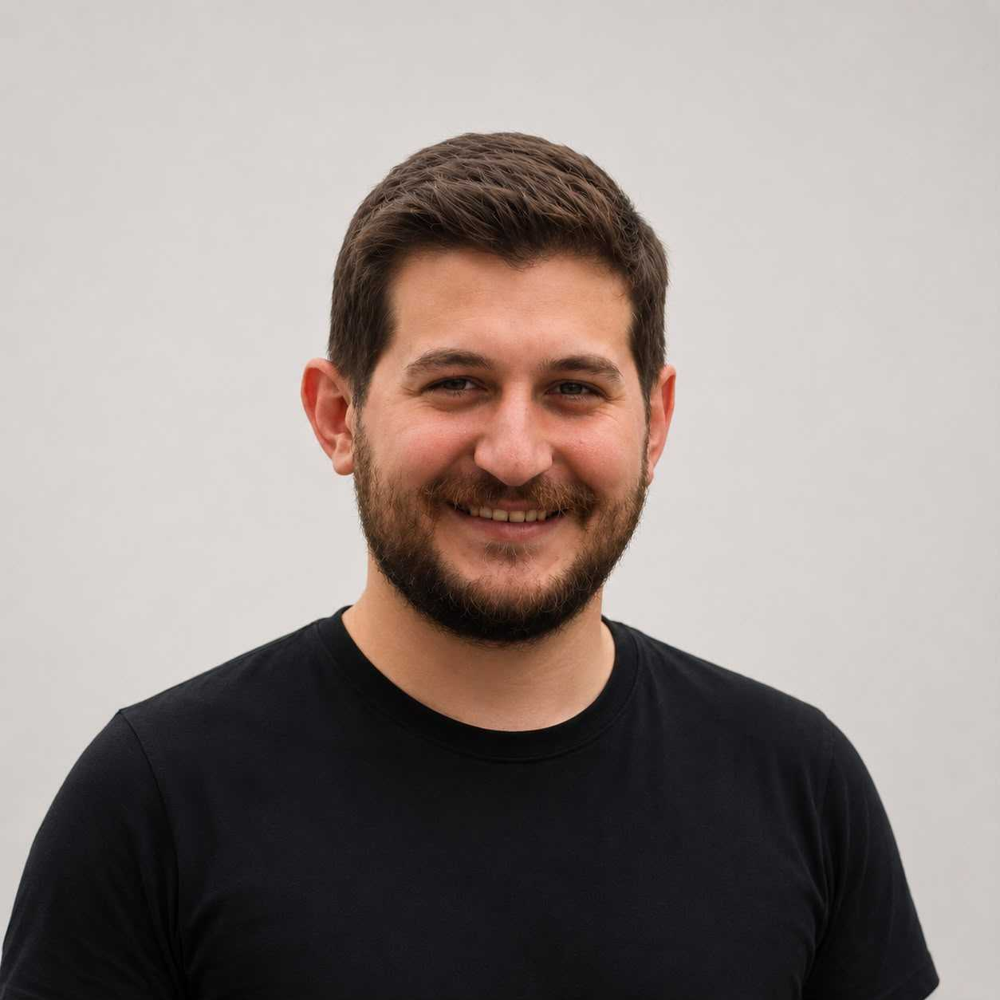
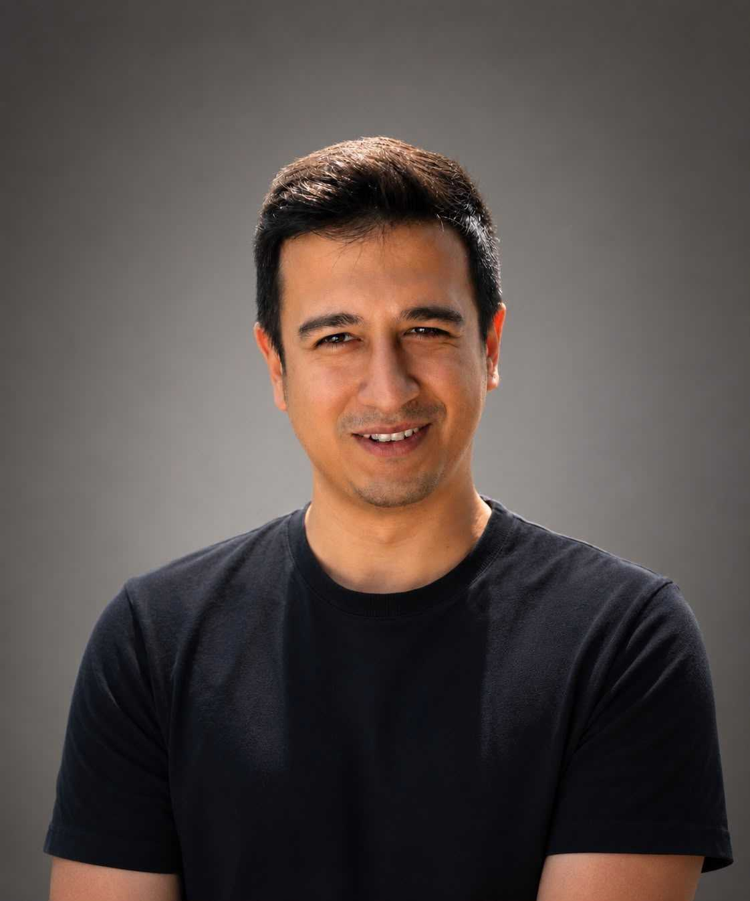

Dijital ürün kalitesi stratejik bir rekabet avantajıdır.
Ancak kodlama ajanları, hızı ve kalite risklerini benzeri görülmemiş bir düzeye taşıdı. Halihazirdaki araçlarla bu hıza yetişmeye çalışmak, kaçınılmaz operasyonel tıkanıklıklara yol açar.
KayIQ, hızlı hareket etmek ile güvenle yayın yapmak arasında sıkışan kurumlar için var; kalite güvencesinin her katmanına yapay zeka destekli otonom zekayı sağlar.
Kalite hatası, gelir kaybıdır.
Kalite borcu, müşteriye yansıyan teknik borçtur.
Otonom QA, sürdürülebilir dijital ekonomi için kritiktir.
KayIQ Kurucu Ekibi
Neden KayIQ
Üç büyük dönüşüm dalgası bir araya geldi; kurumsal QA altyapısı bu güçlerin hiçbirini karşılamaya hazır değildi.
Ekosistem Karmaşıklığı
Dijital ürünler artık onlarca sistemle entegre oluyor. Her yeni bağımlılık yeni bir hata yüzeyi oluşturuyor ve geleneksel QA buna yetişemiyor.
"Vibe Coding" Dalgası
Üretken yapay zekâ ve düşük kodlu (low-code) araçlar geliştirme hızını katlarken, test kapsamı bu hızın gerisinde kalıyor ve her sprintte biriken risk katlanarak büyüyor.
UX = İş Sonuçları
Kullanıcı deneyimi; geliri, kullanıcı bağlılığını ve marka değerini doğrudan şekillendirir. QA bir maliyet kalemi değil, stratejik bir güvence katmanıdır.
Değerlerimiz
Ürün mimarisinden kurumsal çıktılara kadar her kararımızı şekillendiren temel ilkeler.
Stratejik Kalite
Yazılım kalitesini bir destek fonksiyonu değil, kritik bir iş kaldıracı olarak konumlandırıyoruz.
AI-Öncelikli Düşünce
Her iş akışını, ölçülebilir değer kattığı yerde otonom zeka ile yeniden tasarlıyoruz.
Görüşten Önce Kanıt
Ürün kalitesi kararları kişisel görüşlere göre değil; veri, test çıktıları ve bağlam odaklı kanıtlara dayalı olarak alınır.
Radikal Şeffaflık
Yapay zekâ güven skorları, hata nedenleri ve tüm öneriler tamamen açıklanabilir ve denetlenebilir kalır.
Sürekli İterasyon
Her sürümü, platform yetkinliğini ve müşteri değerini artıran bir öğrenme döngüsü olarak görürüz.
Ekosistem Sürdürülebilirliği
Kendi kendini onaran otomasyon, bakım yükünü kaldırır ve test kapasitesini ek kadro gerektirmeden ölçekler.
kayIQ Vizyonunun Arkasındakiler
Dijital dönüşüm, ürün geliştirme, yapay zeka mühendisliği ve büyük ölçekli kalite programlarında derin deneyime sahip ekip, kurumsal düzeyde yapay zeka destekli QA çözümü inşa ediyor.

Tolga Özel
Kurucu - Ürün Stratejisi Lideri
Yapay zeka dönüşümü, dijital ekosistemler, telekom modernizasyonu, akıllı mobilite platformları ve büyük ölçekli kurumsal teknoloji portföylerinde liderlik etmiş teknoloji danışmanı.

Kubilay Şahhüseyinoğlu
Kurucu - Müşteri Başarısı Lideri
Operatörler, tedarikçiler ve çok ülkeli teslimat programlarında BSS/OSS, faturalama, ücretlendirme ve büyük ölçekli dönüşüm deneyimine sahip telekom dönüşüm lideri.

Işık Endir
Kurucu - QA Pratik Lideri
Uçtan uca kalite stratejileri, test yönetişimi, teslimat güvencesi ve kurumsal QA dönüşümü alanlarında deneyimli QA uzmanı ve danışman.

Tuba İslam
Danışman
Kuruluşların karmaşık iş ihtiyaçlarını güvenli, yaratıcı ve ölçeklenebilir yapay zeka mimarilerine dönüştürmesine yardımcı olan AI/ML mühendisi ve veri anlatıcısı.

Mehmet Çelik
Geliştirme Lideri
Kurumsal düzey platformlar geliştiren ürün lideri; telekom alan bilgisini ölçeklenebilir uygulama mimarisi, teslimat yürütümü ve müşteri odaklı ürün çıktılarıyla birleştirir.

Yusuf Koçer
Agentic AI Mühendisi
Flutter, native iOS, full-stack kurumsal sistemler ve canlı bankacılık/iş gücü uygulamalarında deneyimli yapay zeka ve mobil mühendisi.

Selman Kaptı
Full Stack Mühendisi
Flutter, native iOS, Firebase, Google Cloud ve kurumsal çalışan odaklı mobil uygulamalarda deneyimli Full Stack geliştirici.
Otonom kalitenin geleceğine inanan güçlü bir ekosistemle büyüyoruz.
Ölçekte yapay zeka destekli Kalite Güvencesi inşa etmek ve sunmak için iş ortaklarımızla birlikte çalışıyoruz.
Geleceği Birlikte İnşa Edelim: Kurumsal QA dönüşümüne yön vermek üzere yatırımcıları ve stratejik ortakları iş birliğine davet ediyoruz.
KayIQ in the News
Industry coverage, analyst features, and media mentions.
Dijital urun kalite sureclerini otomatiklestiren kayIQ.ai, 500 bin dolar tohum yatirimi aldi
Dijital urun kalite sureclerini yapay zeka ile otonom hale getiren kayIQ.ai, tohum turunda kurucular ve Magis Teknoloji den 500 bin dolar yatirim alarak hayata gecti.
kayIQ.ai, 500 bin dolar tohum yatirimla hayata gecti
Dijital urun gelistirme dunyasi kendi kendini iyilestiren kalite sistemlerine dogru evriliyor. kayIQ.ai, 500 bin dolar tohum yatirimla bu donusume onculuk etmeye hazirlanıyor.
Kalite surecleri icin otonom yapay zeka orkestrasyonu sunan kayIQ.ai, 500 bin dolar tohum yatirim aldi
kayIQ.ai, tohum asamasinda kurucular ve Magis Teknoloji tarafindan 500 bin dolar yatirim alarak faaliyetlerine basladi.
Hizmet Verdiğimiz Sektörler
Yazılım kalitesinin hayati önem taşıdığı kurumsal yapılar için tasarlandı.
Telekom
Yüksek karmaşıklıktaki müşteri self-servis uygulamaları, faturalandırma portalları ve çok kanallı kullanıcı deneyimleri için otonom QA.
Bankacılık, Fintek ve Sigorta
Regülasyona tabi platformlar, yüksek trafikli işlem akışları ve denetime hazır finansal ekosistemler için otonom QA.
Perakende ve E-Ticaret
Dinamik ödeme yöntemleri, çok katmanlı sadakat programı entegrasyonları ve zirve trafikli çok kanallı alışveriş deneyimleri için otonom QA.
Eğlence ve Medya
Dinamik medya dağıtımı, çoklu persona bazlı kullanıcı yolculukları ve platformlar arası kusursuz içerik deneyimleri için otonom QA.
Yeni nesil kalite güvencesini geliştirmek için bize katılın.
Yazılım kalitesi, yapay zeka sistemleri ve kurumsal etkiyi önemseyen ekip arkadaşları arıyoruz.